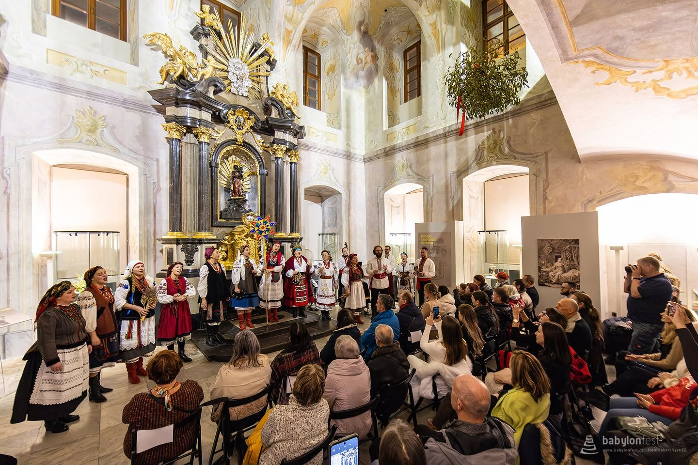

Новини ·
Різдвяний концерт національних меншин у Палаці шляхетних панн
10 грудня 2024 року «Купава» виступила на різдвяному концерті Асоціації Babylon у каплиці Палацу шляхетних панн у Брно.

У каплиці Палацу шляхетних панн звучали польські та українські різдвяні пісні й колядки. Камерним концертом Асоціація Babylon долучилася до заходів Брно як Європейської столиці Різдва 2024. Крім «Купави», виступили Яцек Слевчук і Марія Коржeнкова.
Дякуємо Асоціації Babylon, z.s. за можливість представити українську культуру в Чехії.
Контакти ← На головну сторінку